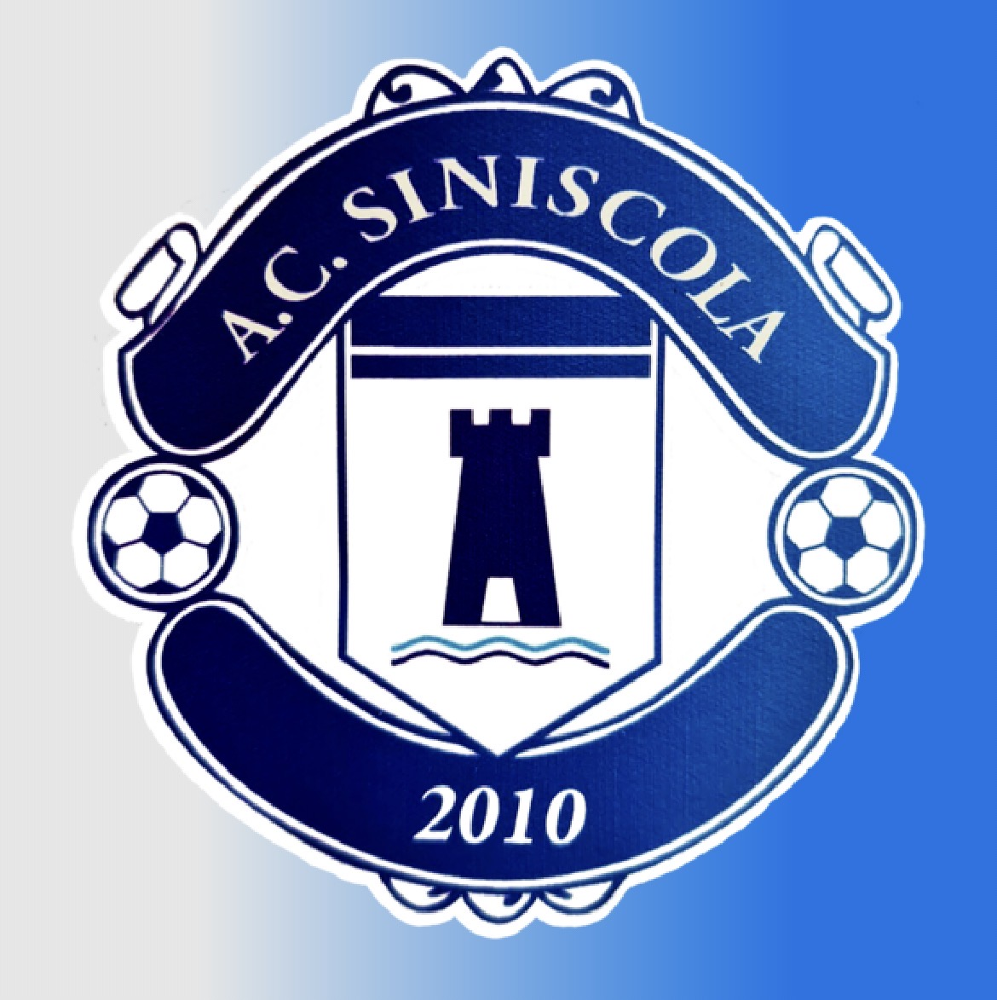
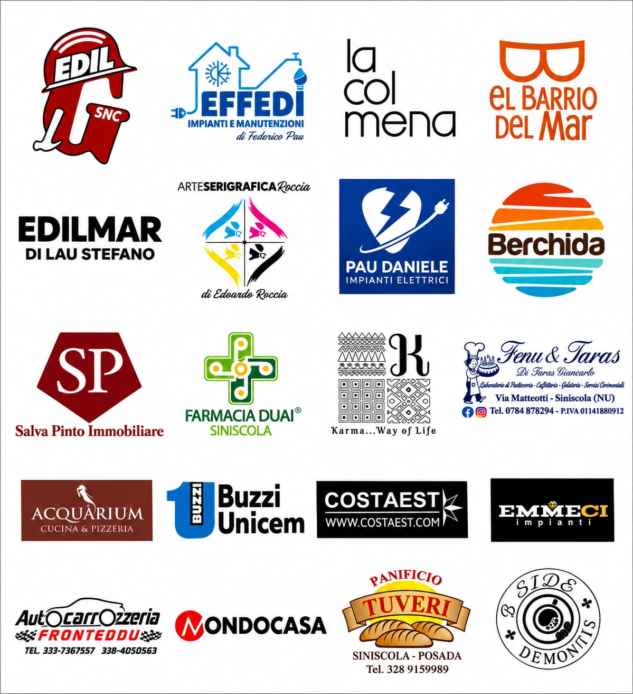

Il nostro campionato
Calendario e risultati aggiornati del Girone H su Tuttocampo.
RISULTATI E PARTITE ↗
Benvenuti nella casa digitale dell'A.C. Siniscola 2010. La nostra passione per il calcio, le nostre squadre e i momenti più belli della stagione.
SCOPRI I DILETTANTI →RISULTATI SU TUTTOCAMPO ↗Sabato 14 novembre 2026 • Ore 15:00
Stadio Comunale di Posada
📍 POSIZIONE DEL CAMPO⚽ Nicolò Massaiu • ⚽ Daniele Scudu
| # | Squadra | G | PT |
|---|---|---|---|
| 1 | Gennargentu Desulo | 4 | 10 |
| 2 | Anela | 3 | 9 |
| 3 | Benetutti | 4 | 7 |
| 4 | Orotelli 2013 | 4 | 6 |
| 5 | Oniferi Calcio 2025 | 4 | 5 |
| 6 | Posada | 3 | 4 |
| 7 | La Caletta | 3 | 4 |
| 8 | Siniscola Montalbo U21 | 3 | 4 |
| 9 | Bolotanese | 3 | 3 |
| 10 | Torpè | 3 | 1 |
| 11 | A.C. Siniscola 2010 | 4 | 0 |
Classifica dalla rilevazione inviata dalla società; aggiornamento manuale.
CONTENUTI IN ARRIVO
Prima squadra • Terza Categoria • Nuoro, Girone H • Stagione 2026/2027
Calendario e risultati aggiornati del Girone H su Tuttocampo.
RISULTATI E PARTITE ↗Scopri tutti i 26 giocatori e lo staff tecnico:
Novità, partite e vita della prima squadra.
Instagram @acsiniscola ↗A.C. Siniscola 2010 • Stagione 2026/2027
| Giocatore | Gol |
|---|---|
| Nicolò Massaiu | 1 |
| Mattia Sanna | 1 |
| Daniele Scudu | 1 |
| Autogol a favore | 1 |
L'autogol a favore è conteggiato nel totale, separatamente dai marcatori della squadra.
40 fotografie dal campo: azioni di gioco, emozioni e momenti della squadra.
APRI LA GALLERIA →CONTENUTI IN ARRIVO
Scopri gli aggiornamenti dal settore giovanile.
@a.c.siniscola2010kids ↗CONTENUTI IN ARRIVO
Comunicazioni ufficiali in arrivo.
Qui pubblicheremo i nuovi tesseramenti.
Racconti e aggiornamenti delle nostre partite.
Grazie alle aziende che sostengono l'A.C. Siniscola 2010!

Vieni a sostenere l'A.C. Siniscola 2010!
📍 RAGGIUNGI IL NOSTRO CAMPO